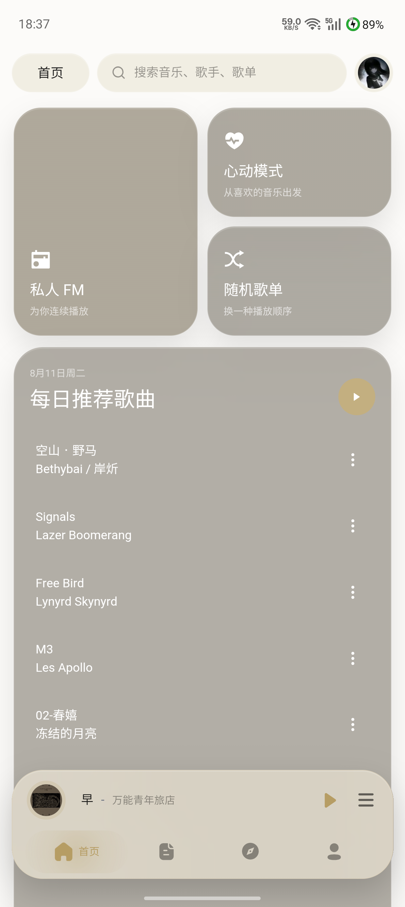

ANDROID · WORD-TIMED LYRICS
Zephyrus
Player
让歌词成为播放界面本身。
自有 TTML、AMLL、YRC 与 QRC 汇入同一条逐字时间轴。九种移动舞台、高潮视觉和原生状态栏歌词，只为 Android 手机。
ANDROID 8.0+ · SIGNED RELEASE · OPEN SOURCE

01 / WORD-TIMED
不是逐行翻页，
而是一条可以看见的时间轴。
Zephyrus 优先使用自有 TTML 与 AMLL TTML，再回退网易云 YRC、QQ QRC 和普通 LRC。主唱、背景词、对唱、翻译及罗马音在同一播放时钟中推进。
直到下一句到来以前
22:165G 87%
风让潮声退后
BIG TYPE · LIVE TIMING
一个分词，
可以占据整块屏幕。
舞台、诡谲、狂热、陈旧和烟雾支持巨幅歌词与强制单行。高潮中可以逐字砸下、变色或错落铺开；TTML 的背景和对唱声部仍保持自己的卡拉 OK 时间。
了解逐字渲染02 / SOURCE ORDER
更好的歌词到达时，
它会安静地接管。
接口歌词可以立即开始播放；更高优先级的 TTML 到达后，在下一行边界完成切换，不打断正在发光的词。
- 01Zephyrus TTML逐字 · 背景 · 对唱
- 02AMLL TTML逐字 · 背景 · 对唱
- 03网易云 YRC逐字 · 翻译 · 罗马音
- 04QQ QRC逐字 · 翻译 · 罗马音
- 05普通 LRC稳定行级回退
03 / NINE STAGES
一首歌，不止一种舞台。
背景、歌词颜色、歌曲主题色、字体、字重与高潮效果按播放器样式独立保存。一键还原只作用于当前样式。
04 / ANDROID NATIVE
离开播放器，
歌词还在。
状态栏歌词由 Android 原生悬浮窗渲染，不是播放器里的模拟预览。位置、字体、字重、逐字进度，以及已唱、当前、未唱和表面颜色都可以独立配置。
配置状态栏歌词
让歌词 留在屏幕边缘
ZEPHYRUS PLAYER · ANDROID